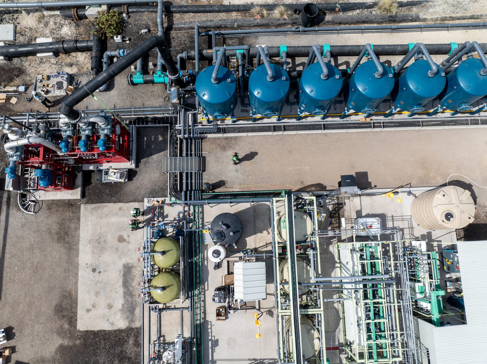
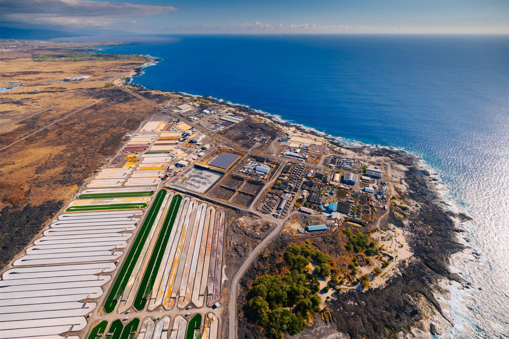
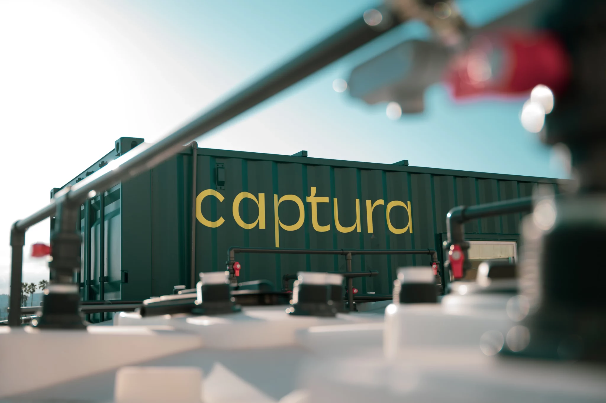
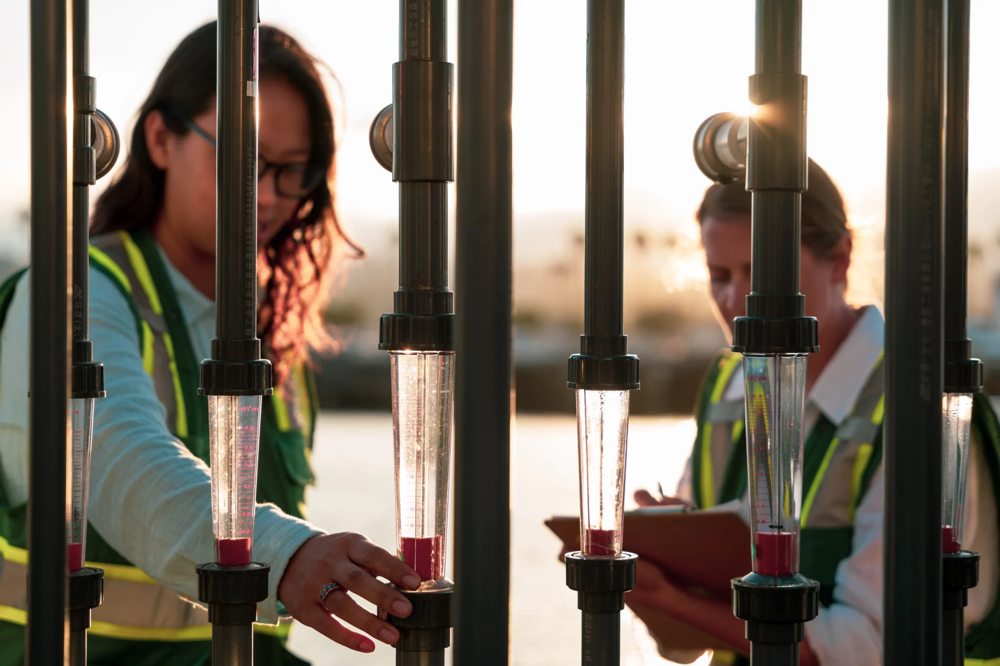
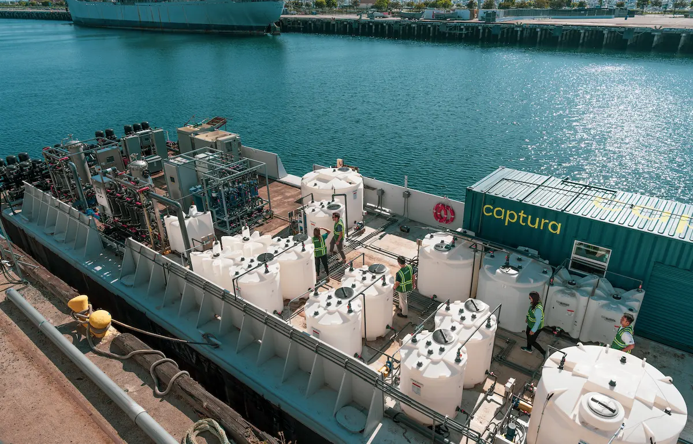
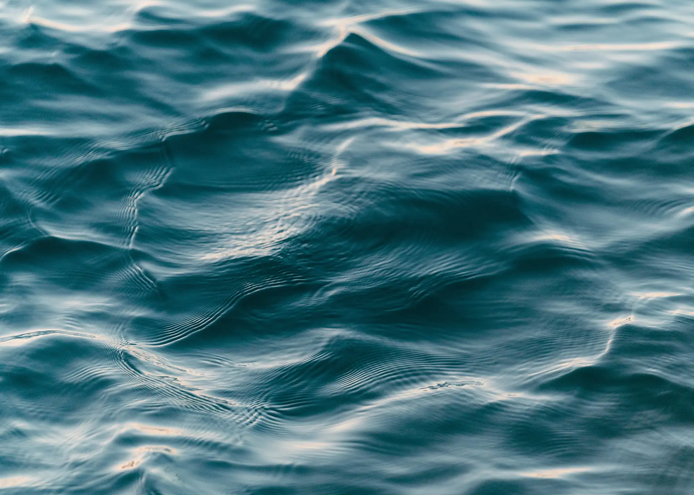
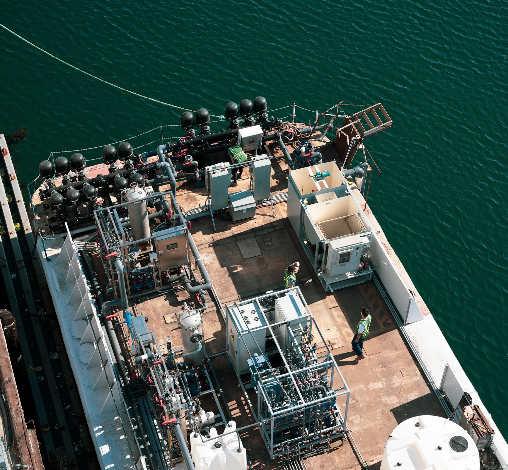

技术原理Technology只用海水和绿电，
只用海水和绿电，
把碳从大气里取出来
核心是 Captura 在加州理工研发的双极膜电渗析平台。它驱动直接海洋捕集，也作为独立产品服务提锂、水处理与储能。

工艺示意图Process diagram
一套系统里发生了什么
- 海水
- 酸液
- 碱液
- CO₂
- 可再生电力
- 1取少量海水
- 2电渗析制酸碱
- 3释放并收集 CO₂
- 4海水回流，再吸碳
技术原理Direct Ocean Capture四步，把空气里的碳
四步，把空气里的碳
交给海洋，再取出来
系统只需要两种输入：海水与可再生电力。不向海洋添加任何物质，没有副产物，也不占用淡水。
- 01
取少量海水
抽取一小部分海水并预处理，可直接复用电厂、淡化厂已有的取水设施。
- 02
电渗析制酸碱
可再生电力驱动双极膜电堆，把海水中的盐分离为酸液和碱液。
- 03
释放并收集 CO₂
酸液让溶解无机碳转化为 CO₂ 气体，分离出高纯度、可计量的 CO₂ 气流。
- 04
海水回流，再吸碳
碱液恢复 pH 后海水回到海洋，并从大气中重新吸收等量的 CO₂。
封存与地质封存服务商合作，锁存数千年利用合成燃料、化学品、建材
双极膜电渗析Bipolar membrane electrodialysis
同一块膜，不止于碳移除
电渗析用离子交换膜和电流，直接从盐溶液中制取酸和碱，可处理多种进水和工业废液。Captura 在加州帕萨迪纳的工厂以卷对卷工艺量产双极膜，并组装电堆。
10×性能最高可达主流方案的 10 倍，能耗与投资更低
< 10 µV/h实测电压衰减率，支持多年膜寿命目标
PFAS-free膜材料不含全氟化合物
BPM · CEM双极膜、阳离子交换膜、电堆与交钥匙系统
直接提锂浓盐水资源化工业废水资源化长时储能电化学碳捕集
海洋健康与 MRVOcean health & MRV
每一吨都可测量、可核证
MRV 指监测（Monitoring）、报告（Reporting）与核证（Verification），决定碳移除量是否可信，也决定碳信用的价值。
Captura 的海洋学团队持续监测工艺与海洋生态的相互作用，联合外部专家开展环境监测、海洋模拟与生物影响研究，并与独立登记机构 Isometric 合作完善直接海洋捕集的方法学。研究成果计划发表在开放获取的同行评审期刊上。
0不向海洋添加任何物质，不留化学残留
Isometric独立碳移除登记机构，参与方法学开发

现场In the field
从试点工厂到膜材生产线
左右滑动查看更多






Photos: Captura
发展历程Scaled 1,000× in three years
从实验室到海边，再到中国

第一代系统，加州理工 Kerckhoff 海洋实验室

第二代系统，洛杉矶港 AltaSea 海洋研究基地

第三代试点，夏威夷海洋科技园，与 Equinor 合作

海浦麒推进长三角 DOC 中试，探索与海上风电、海洋牧场耦合